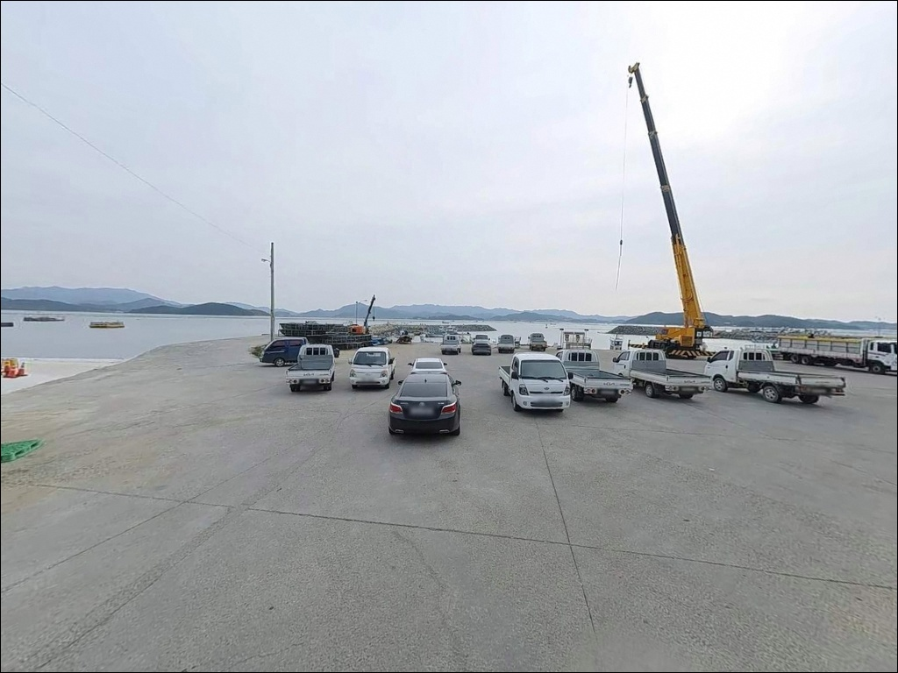
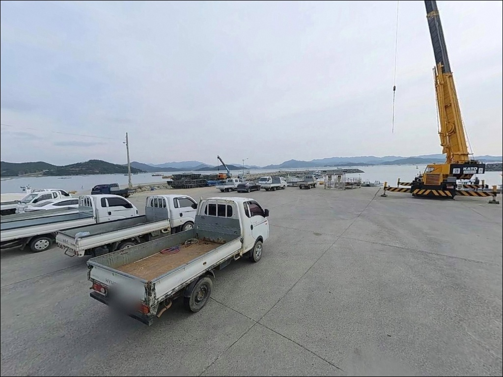
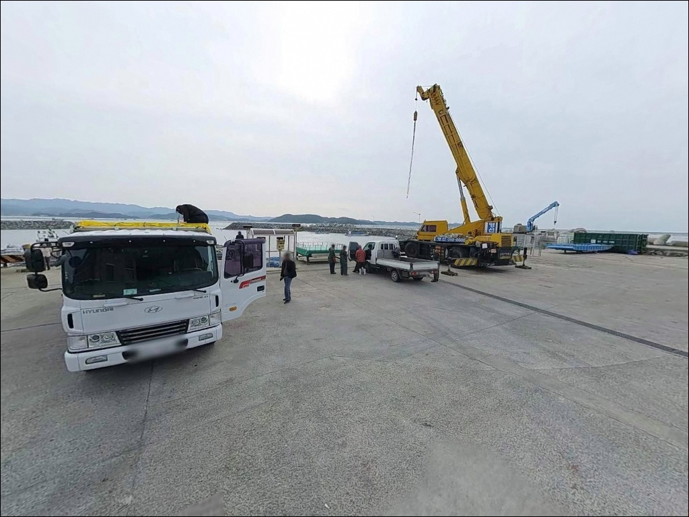
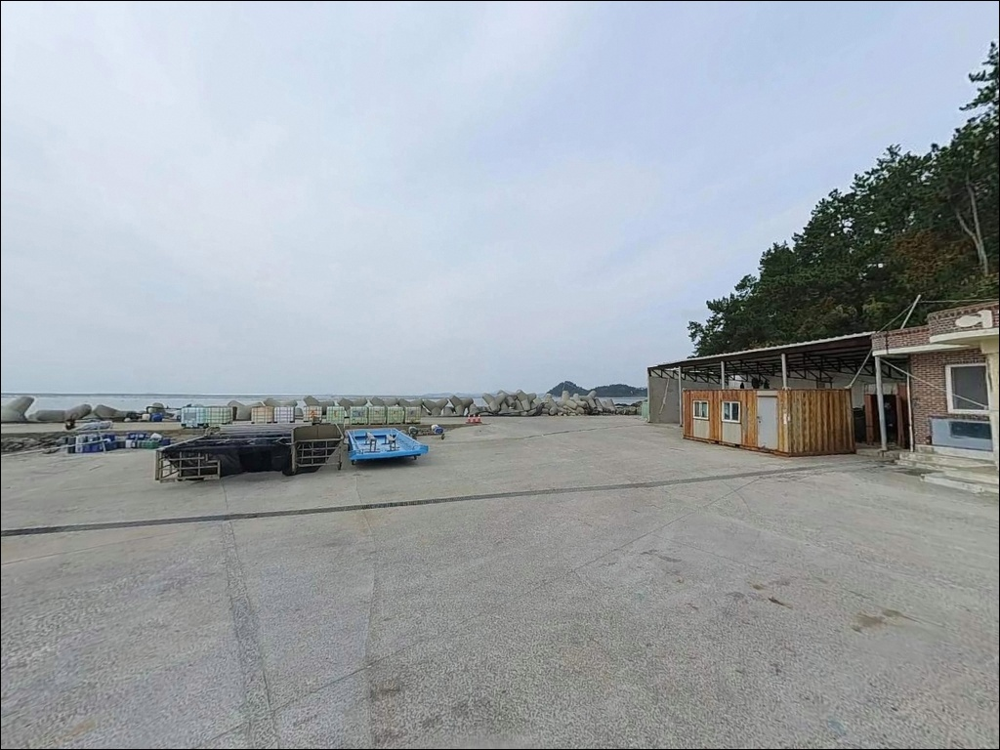
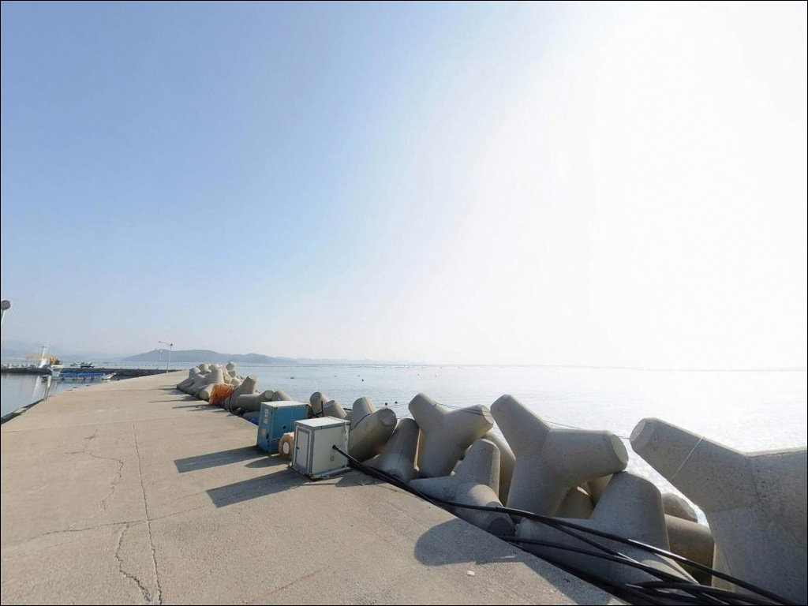
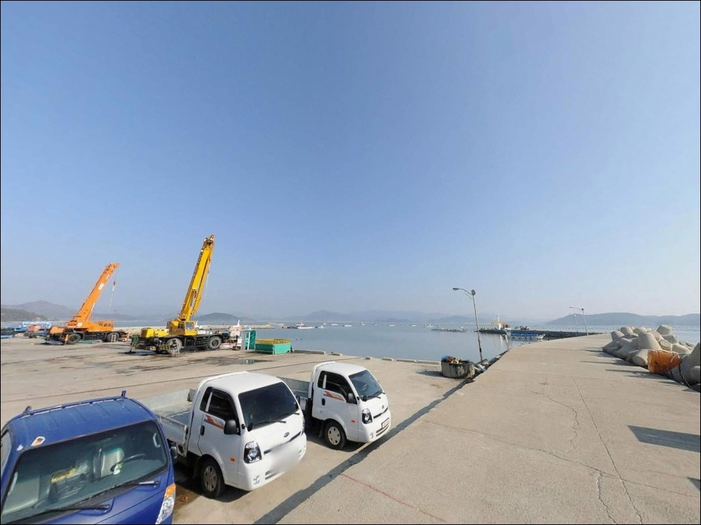
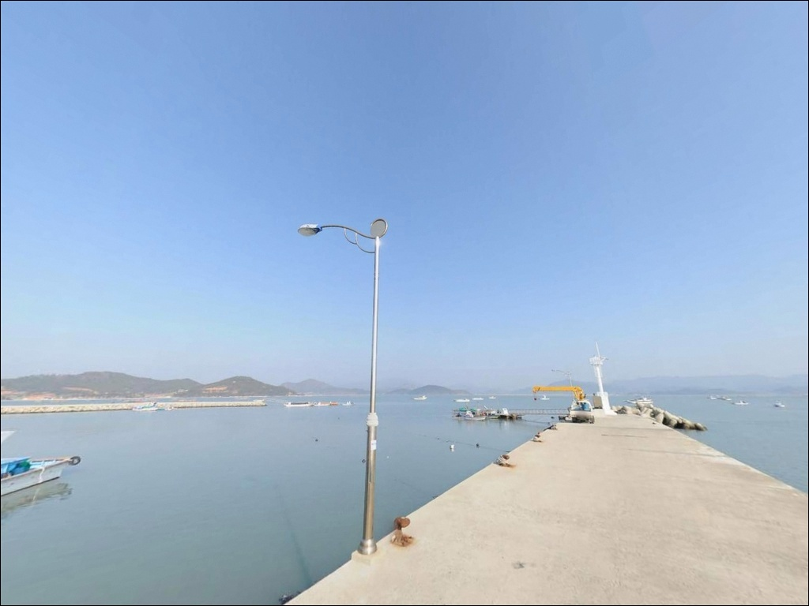
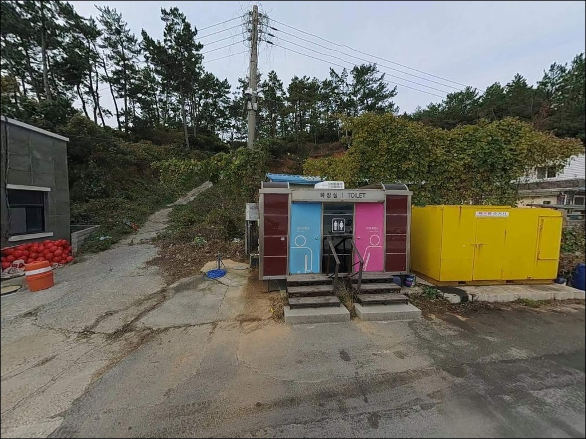

포인트 안내
송평항(송평선착장)
전남 해남군 화산면 평호리 395-39
물때 확인 없이 송평항에 도착하면
간조 때 수심이 낮아진 내항에
채비를 던지게 됩니다.
방파제 구조상 내항은 조류가 잔잔하고
수심 변화 폭이 있는 편이라,
초들물 이후 타이밍을 맞추는 것이
이 포인트를 제대로 공략하는 첫 번째 조건입니다.
전남 해남군 화산면 평호리 해안선에 자리한
송평항은 3km 모래사장이 이어지는
송평해수욕장 끝단과 맞닿은 소형 지방어항입니다.
현지 낚시점 관계자가 화산면 해안선 포인트 중
하나로 꼽은 이 항은
가을 감성돔 시즌에 이름이 오르는 구간이기도 합니다.
이 글은
송평항의 지형 조건, 진입 환경,
차박 여건, 낚시 방식 적합성에 집중합니다.
조황 단정이나 특정 어종 보장은
이 글의 범위에 포함되지 않습니다.

1. 진입 동선과 포인트 접근성
77번 국도(송평로)를 따라 화산면 방축리에서
평호리 방향으로 내려오면
해안도로(평호로)와 자연스럽게 연결됩니다.
급경사나 비포장 구간이 없는
해안 농어촌도로 수준의 진입로이며,
승용·SUV 기준으로 접근에 큰 어려움은 없는 편입니다.
다만 소형 지방어항 특성상
항 내부나 선착장 끝단에서의
대형 차량 회차 공간은 제한적일 수 있습니다.
초행이라면 출발 전 위성지도로
진입로 폭과 회차 가능 구간을
미리 확인하고 가는 것이 안전합니다.
주차는 방파제 시작부 공터와
선착장 주변 유휴 공간을 활용하는 방식이
일반적입니다.
어선 계류 동선을 막지 않는 자리가 우선이며,
어업 활동이 이루어지는 시간대에는
주차 여건이 달라질 수 있습니다.

2. 차박 환경과 야간 체류 여건
평호리는 민가 밀집도가 낮은 소규모 어촌 마을입니다.
야간 차량 통행이 드물고
외부 소음 영향도 적은 편이라,
낚시 후 조용히 하룻밤 머무는 환경으로는
나쁘지 않은 조건입니다.
인접한 송평해수욕장 방향은
비수기 기준으로 특히 한적합니다.
가로등 시설이 제한적인 구간이 있어
야간에는 헤드랜턴과 조명 장비를
반드시 갖춰야 합니다.
방파제 외항 쪽은 서·남풍 영향을 받는 구조로,
바람이 강한 날은 파도 소음과 함께
차박 체류 조건이 달라지므로 기상 확인이 선행되어야 합니다.
차박이란 차량을 숙박 공간으로 활용하며
현장에서 하룻밤 머무는 여행 방식입니다.
선착장 주변 주차 공간이 넓지 않은 편이라
차박을 메인으로 계획한다면
현장 도착 후 공간 여건을
먼저 확인하는 것이 순서입니다.


3. 주변 편의시설 및 인프라 현황
송평항 반경 1km 이내에서
확정된 편의점·식당·마트 정보는 없습니다.
인접한 송평해수욕장에는
해남군이 조성한 세족장이 있으며,
해수욕장 내 공중화장실도
이용 가능한 위치에 있습니다.
다만 항에서 다소 거리가 있으므로
사전 이동 동선을 파악해 두는 편이 좋습니다.
반경 3km 이내의 편의점·마트·주유소 정보는
출발 전 개별 확인이 필요합니다.
화산면소재지 방향으로
약 6km 이동하면 하나로마트,
편의점, 주유소 등을 이용할 수 있습니다.
출발 전 식수, 얼음, 낚시 소품, 연료까지
완전 자급 체제로 진입하는 것이
현실적인 준비 방식입니다.

4. 방문 전 반드시 챙겨야 할 준비사항
송평항 방문 전에 가장 먼저 확인할 것은 물때입니다.
물때란 바닷물이 들어오고 나가는
조석 주기를 나타내는 시간 단위로,
낚시 여건을 결정하는 핵심 변수입니다.
바다타임에서 화산면 송평항 기준 물때를 확인하고
초들물 이후 타이밍에 맞춰
출발 시각을 조정하는 것이 기본입니다.
서남해 특성상 돌풍이 잦은 지역이므로
기상청 해양기상 예보를
당일 아침에 반드시 다시 확인합니다.
석축·암반 구간이 있는 포인트 특성상
채비 손실이 있을 수 있어
여분 채비를 넉넉히 준비하는 편이 좋습니다.
야간 낚시를 계획한다면 구명조끼와
헤드랜턴은 필수 장비입니다.
마을 선착장이라 어선 계류와 어민 작업이
이루어지는 공간입니다.
어선 이동 동선과 어구에 접촉하지 않도록
자리를 잡는 것이 기본 매너이며,
출조 전 최신 조황은
"송평항 낚시", "해남 화산 낚시 조황"으로
검색해 보시기 바랍니다.

5. 물때를 맞춰야 달라지는 지형 낚시 여건
송평항은 방파제와 선착장이 조합된
소형 지방어항 구조입니다.
내항은 잔잔한 정박 위주 공간이며,
외항 방향으로 나갈수록
수심이 깊어지는 형태입니다.
선착장 정면 약 40m 지점에
전복·김 양식장이 위치한 구조라,
조류 소통이 일정하게 이루어지는 환경입니다.
항 입구 좌우로는 조류 흐름이 생기는 구간이 형성됩니다.
인근 어란진항 수심 기준을 참고하면
이 일대 수심은 2.7~3.1m 내외로 추정됩니다.
화산면 해안선 전체가 크고 작은 만이 발달한
리아스식 지형 구조라
수심 변화 지점이 형성되기에
낚시 포인트가 산재하는 환경입니다.
선착장 석축과 방파제 주변에는
암반과 잔돌 바닥이 혼합된 구간이 있어
구조물 주변 탐색 시 밑걸림에 주의해야 합니다.
방파제 끝단 바깥쪽은 사니질과
암초가 섞인 바닥 구조로
다양한 낚시 방식이 통하는 지형 조건입니다.


6. 외항 끝단과 석축이 갈리는 낚시 스타일 선택
이 포인트에서 가장 잘 맞는 낚시는 원투낚시입니다.
방파제 끝단이나 외항 방향으로
40m 이상 채비를 던지면
양식장 인근 바닥층과 조류 흐름 구간을
함께 공략할 수 있는 구조입니다.
도다리, 붕장어, 민어 계열이
이 지형에서 기대해 볼 수 있는 어종입니다.
가을 찌낚시도 이 포인트 지형에 맞는 방식입니다.
화산면 해안 일대는 9월에서 11월 사이
감성돔 포인트로 현지에서 언급되는 구간이며,
방파제 내항 경계 구간에서
조류를 타고 채비를 흘리는 방식이
이 시기 가장 유효한 접근입니다.
루어와 에깅도 병행 공략이 가능합니다.
선착장 석축과 방파제 주변 구조물은
볼락 라이트게임에 잘 맞는 여건이며,
수심 변화가 있는 외항 구간은
갑오징어 에깅을 시도해 볼 만한 조건입니다.
야간 입장이라면 소형 지그헤드로
구조물 경계선을 천천히 탐색하는 방식이 어울립니다.

7. 대안 포인트와 플랜 B 동선
송평항이 여의치 않을 때
가장 가까운 대안은 어란진항입니다.
약 8km 거리에 위치한 해남 유일의 국가어항으로,
수심 2.5~5m 수준의 안정적인 방파제 구조에
진입과 주차 여건이
송평항보다 여유 있는 편입니다.
어란진항에서는 감성돔, 도다리, 붕장어, 숭어 등이
낚시 포인트로 현지에서 언급되며,
테트라포드 구간에서 루어 낚시도 가능한 구조입니다.
2025년 착공한 항만 정비사업이 진행 중이라
사전에 현장 상황을 확인하고
낚시 가능 구간을 파악하는 것이 좋습니다.
같은 평호리 인근에는
좌일방파제도 있습니다.
방파제 구조가 유사하고
송평항에서 이동 거리가 짧아
조과가 부진할 때 빠르게 이동해
비교 탐색하기 좋은 대안 지점입니다.

조용한 해안 어항에서
원투 채비를 펼치는 출조
원투낚시나 가을 찌낚시를 즐기는 낚시인이라면
송평항의 방파제·선착장 구조는
잘 맞는 지형 조건입니다.
유명 포인트처럼 사람이 몰리지 않아
자리 경쟁 없이 차분하게 채비를 펼칠 수 있고,
화산면 해안선에서 아직 덜 알려진 구간이라
직접 답사해 둘 가치가 있는 포인트입니다.
반면 편의시설이 없는 구조라
충분한 자급 준비 없이는 불편함이 큽니다.
물때 확인 없이 간조 타이밍에 도착하면
낚시 여건 자체가 성립하지 않는 상황을
맞닥뜨릴 수 있습니다.
물때 확인·자급 준비·진입로 사전 점검,
이 세 가지를 갖추고 간다면
화산면 해안선에서 기억에 남는 출조가 될 수 있는 곳입니다.
인접한 송평해수욕장 해송림 옆에서
하룻밤 낚시와 차박을 함께 즐기려는 분이라면,
서·남풍 예보와 주차 공간만 미리 확인해두면
조용한 서남해 차박 출조지로
충분한 여건이 됩니다.